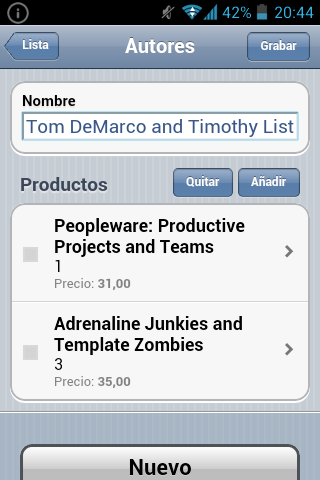

Interfaz de usuario para móviles
Con
XavaPro solo has de acceder a tu aplicación con un navegador móvil para disfrutar de la nueva interfaz, y sin necesidad de escribir una sola línea de código.
La interfaz de usuario para móviles incluye seguridad, navegación, modo lista, modo detalle, propiedades, referencias, colecciones, grupos y secciones. Todos con el comportamiento típico de OpenXava incluyendo tus propias acciones.
Esta es la página de identificación de usuario:
Este es el menú:
El modo lista:
Este es el modo detalle:
Un grupo:
Una colección:

Secciones: